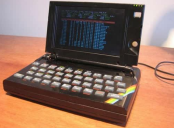
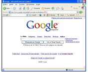

Introducción HTML:
"Crear una pagina web es más sencillo de lo que parece. En realidad, cualquiera puede crear o editar una web. No es necesario tener ninguna habilidad especial, ni haber estudiado un máster, para desarrollar paginas web; todo lo que se necesita es una gran voluntad de aprender, la motivación que realmente puedes conseguir, y la paciencia sufiencte para ir avanzando en el proceso de publicación de una web en internet." Prescott, P. (2015). HTML 5. Babelcube Inc. Tomado del libro HTML5, [texto].
Libro HTML 5.
Copiada de pt.quish.tv, [Imagen].
Introducción y concepto de interacción humano ordenador:
"La interacción con el ordenador va pasando desde la línea de comandos donde se le daban las órdenes en un lenguaje puramente informático…"
"A otras formas más “amigables” como los menús de opciones ó la actual manipulación directa, en la que el usuario tiene la posibilidad de manejar los “objetos” de una forma similar a la que acostumbra en la vida real." Copiado de INTERACCION HOMBRE-ORDENADOR, [texto].
INTERACCION HOMBRE-ORDENADOR


Sacadas de INTERACCION HOMBRE-ORDENADOR,[captura de pantalla].